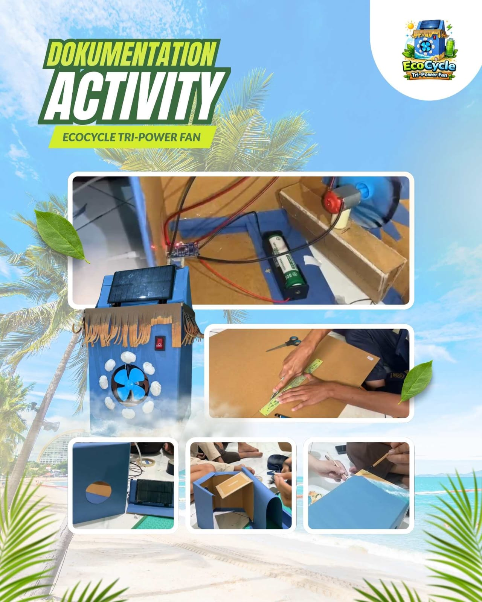

Welcome to the EcoCycle Tri-Power Fan information page.
This website provides product descriptions, the production process, advantages, documentation, as well as information on production costs and selling prices.
Explore each section to learn more about our product.
Philosophy, Concept & Innovation, Design
The EcoCycle Tri-Power Fan is based on the idea that waste can be turned into something useful. It reflects creativity, environmental awareness, and the importance of using simple materials wisely.
This product is a simple fan made from recycled materials that uses three power sources: solar panels, a rechargeable battery, and electricity. The combination of these energy sources makes the fan more flexible and useful while still being affordable and easy to make.
The design uses a beach theme inspired by the sea and sky, with decorations like sand texture and small ornaments. This concept creates a cool and relaxing feeling, similar to a tropical atmosphere like Hawaii.
How to Make
1. Materials:
• Cardboard
• 2 Solar Panels
• 1 Switch
• 1 Fan Blade
• 1 Motor
• 1 Rechargeable Battery
• 1 Battery Holder
• 50cm Cable
• 1 Charging Module
2. Tools:
• Ruler
• Glue Gun
• Scissors
• Soldering Iron
• Cutter
3. How to Make:
1. First, make the fan frame by measuring and cutting the used cardboard into a box shape (15 × 15 × 20 cm).
2. On the top part, make two holes like in the video for the wiring.
3. Then, make a triangle support for the solar panel and attach it on the top.
4. Connect the solar panel to the cable using a soldering iron.
5. After that, attach both solar panels to the front and back of the triangle support.
6. Then, cover the right and left sides with triangle shapes like in the video.
7. After the frame is finished, cover all parts with colored paper to make it look nice.
8. Then, on the front side, make a circular hole in the center for the fan blade and a small hole at the top right corner for the switch.
9. After that, make a support for the fan motor and place it inside the box
10. Then, attach the fan blades to the motor and glue it to the support.
11. Put the rechargeable battery into the battery holder and glue it to the bottom of the box. After that, install the switch in its place.
12. Then, connect the rechargeable battery and the switch to the charging module using cables, like in the video.
13. Don’t forget to make a hole for the Type-C charger so it can supply power to the charging module.
14. Attach the top part with the solar panel to the body of the box.
15. Then, connect the solar panel cable to the charging module, like in the video.
16. After everything is connected, glue the charging module in the charger hole so it stays in place.
Photo

The making process of this product is documented through photos and videos. Each step, starting from preparing the materials, building the frame, installing the electrical components, until the final decoration, is recorded clearly. This helps users understand the process more easily.
We also provide a tutorial video that shows the step-by-step process in a simple and clear way. The video is made to help beginners follow the instructions without confusion. In addition, the documentation also shows the final result of the product and how it works, so viewers can see the function of the fan directly.
EcoCycle Tri-Power Fan
This fan provides cool air for daily use, especially in hot weather. It can help users feel more comfortable and is suitable for personal use at home or in the classroom. With its simple design, this fan is easy to use and practical for everyday needs.
In addition, this product is eco-friendly because it uses recycled materials. It also uses three power sources—solar panels, a rechargeable battery, and electricity—making it more flexible and energy-efficient. This fan also encourages creativity and shows that waste materials can be turned into something useful.
Price to Sell & Promote
The production cost is around Rp 27,000. This product is sold for Rp 35,000, with a profit of about Rp 8,000. The price is affordable and suitable for students.
We promote this product through social media platforms such as Instagram. We also repost it on our personal accounts to reach a wider audience.